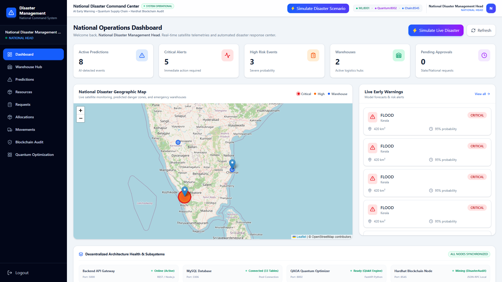
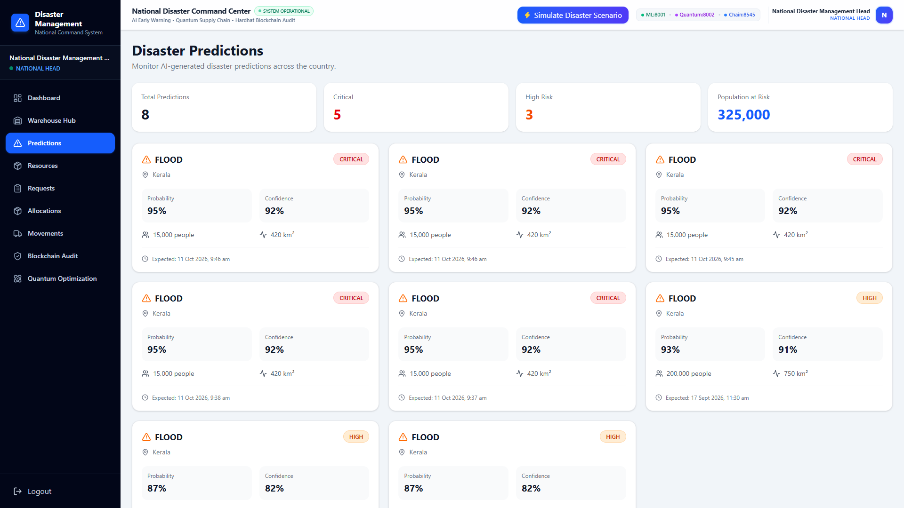
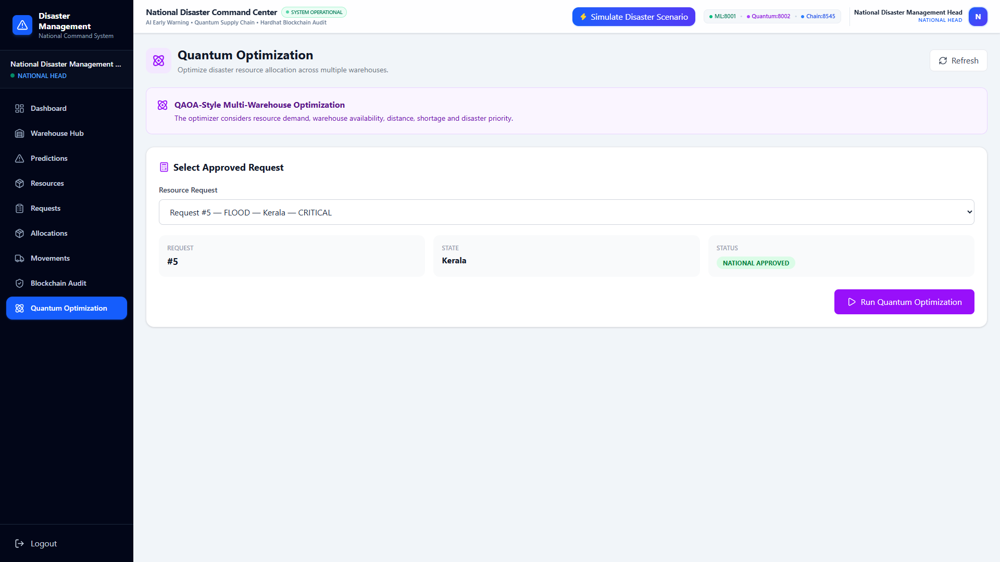
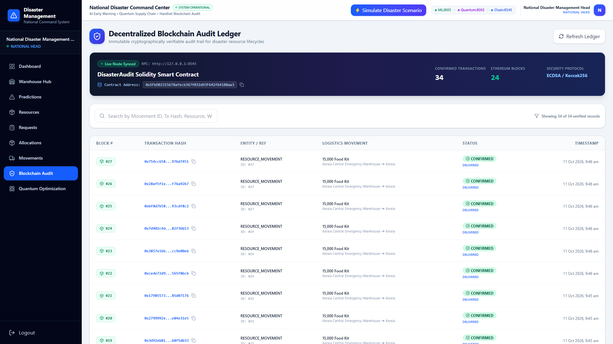
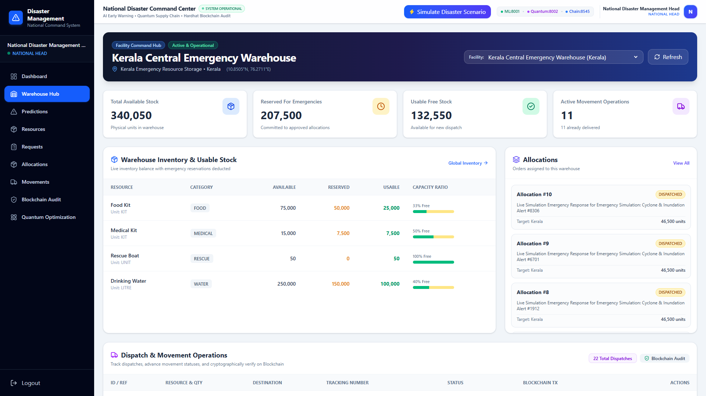

An enterprise-grade, distributed multi-tier cloud orchestration platform integrating 23-feature AI meteorology, Copernicus Sentinel remote sensing, Qiskit QAOA quantum multi-facility optimization, and immutable Ethereum blockchain auditing.
Traditional civil defense operations suffer from critical systemic bottlenecks that cost lives and misallocate billions.
Decoupled microservices architecture ensuring horizontal elasticity, zero single-point-of-failure, and asynchronous fault isolation.
React 18 / Vite (Port 5173) provides responsive command dashboards.
Express.js Gateway (Port 5000) enforces JWT security, connection pooling, and multi-service routing.
MySQL 8.0 (Port 3306) stores 33 ACID-compliant tables and manages two-phase stock locking.
Python FastAPI (Port 8001) executes the 23-feature Random Forest ML prediction pipeline.
Qiskit Microservice (Port 8002) simulates QAOA quantum statevector circuits for multi-warehouse allocation.
Hardhat Ethereum Node (Port 8545) mines tamper-evident smart contract audits.
// Distributed Service Communication Topology
[Browser Client] ──(HTTPS/JWT)──> [Node.js Gateway :5000] ──(MySQL2 Pool)──> [MySQL 8.0 Database :3306]
├──(HTTP POST /predict)──> [FastAPI ML Service :8001]
├──(HTTP POST /optimize)─> [FastAPI Qiskit Quantum :8002]
├──(JSON-RPC / Ethers.js)─> [Ethereum Hardhat Node :8545]
└──(OAuth2 Token API)────> [Copernicus Sentinel Hub / CDSE]
Engineered with InnoDB ACID transactions, cascading foreign keys, strict indexing, and atomic stock reservation guarantees.
roles (5 hierarchical tiers)users (BCrypt hash, state/district link)approval_actions (Audit trail)countries, states, districtsstate_locations (GPS coordinates)audit_logs, notificationsresource_categories (Food, Water, Medical)resources (Standard units, thresholds)warehouses (Manager isolation mapping)warehouse_resources (Available & Reserved)resource_requirement_rules (Per capita formulas)disaster_events & disaster_typesdisaster_predictions & prediction_runsresource_requests & itemsoptimization_runs (QAOA solution metrics)resource_allocations & movementsblockchain_transactions (Block & Hash)Extracts sliding 14-day atmospheric and hydrological telemetry to classify disaster events and determine population exposure.
10m sustained velocity, 7-day maximum wind gusts, and dominant azimuth angle to differentiate inland river floods from coastal storm surges.
N_affected = Area_km² × Density_state × W_severity × P_model
Direct integration with Copernicus Data Space Ecosystem (CDSE) combining Synthetic Aperture Radar and Optical Imagery.
During peak tropical cyclones and monsoon cloudbursts, optical satellites cannot see the surface. Sentinel-1 C-SAR radar pulses pierce dense clouds and rain to measure surface roughness deltas, mapping flood water extents with 10-meter ground resolution.
Utilizes Visible, Red-Edge, and Near-Infrared (NIR) bands to compute the Normalized Difference Water Index (NDWI):
NDWI = (Green - NIR) / (Green + NIR)
Enables high-fidelity spatial validation of submerged transport arteries and civic infrastructure.
Solves NP-hard multi-warehouse combinatorial allocation using quantum superposition, phase separation, and mixer Hamiltonians.
Minimizes a multi-objective cost Hamiltonian balancing transport distance, unfulfilled demand, and emergency priority:
# Qiskit QAOA Circuit Layer Implementation for i in range(num_qubits): qc.h(i) # Create equal superposition state |ψ₀⟩ # Problem Hamiltonian Unitary U(C, γ) for i, cost in enumerate(costs): qc.rz(2.0 * gamma * cost, i) # Transverse Mixer Hamiltonian Unitary U(B, β) for i in range(num_qubits): qc.rx(2.0 * beta, i) # Statevector Sampling (1,024 shots) sampler = StatevectorSampler(seed=42)
Solidity 0.8.20 smart contract deployed on local Ethereum node, mining Keccak-256 cryptographic proofs of all relief dispatches.
contract DisasterAudit { struct AuditRecord { uint256 recordId; string eventType; // "RESOURCE_DISPATCHED" string referenceId; // "MOVEMENT:18" bytes32 dataHash; // Keccak-256 uint256 timestamp; address recordedBy; } function recordAudit( string memory eventType, string memory referenceId, bytes32 dataHash ) external returns (uint256); }
Before every supply shipment departs, the backend generates a deterministic Keccak-256 hash of the exact logistics payload:
Non-Repudiation: Even if an internal database administrator alters records in MySQL, the cryptographic hash check against the Ethereum block immediately reveals the manipulation.
Interactive Leaflet GIS map with pulsing disaster risk radii, live warning feeds, active service health chips, and simulation trigger.

Inundation probability gauges, estimated population impact figures, historical execution logs, and automated shortage synthesis.

Presents state emergency authorities with instant visibility into incoming disaster events before ground devastation occurs.
Candidate warehouse comparisons, highway distance matrices, priority weight adjustment, and QAOA execution summaries.

Real-time Ethereum ledger table displaying verified block numbers, Keccak-256 hashes, copy buttons, and shipment references.

Facility manager command hub showing usable stock bars, facility-level isolation barriers, and real-time movement trackers.

The complete choreographed sequence connecting early prediction to physical delivery verification.
1. Weather telemetry ingested.
2. ML classifies 95% flood risk.
3. Automated calculation creates shortage requisition ticket.
4. State Head reviews and escalates to National Command.
5. National Head authorizes deployment of central stockpiles.
6. Qiskit QAOA selects optimal warehouse dispatch split.
7. Allocation created; warehouse usable stock reserved atomically.
8. Dispatch moves stock & mines Block #16.
9. In-transit update mines Block #17.
10. Field handover mines delivery receipt in Block #18.
Cryptographic JWT bearer authentication, route guards, and SQL-level facility access verification.
| System Capability | NATIONAL_HEAD | STATE_HEAD | WAREHOUSE_MGR | FIELD_OFFICER |
|---|---|---|---|---|
| National Command Dashboard | Full / Simulate | State Only | — | Read Only |
| State Requisition Approval | Authorize | Approve / Reject | — | — |
| National Deployment Approval | Approve / Reject | — | — | — |
| Quantum Allocation Optimization | Execute | — | — | — |
| Facility Dispatch & In-Transit | Monitor | Monitor | Assigned Depot | Confirm Delivery |
| Ethereum Blockchain Audit Ledger | Full Access | Full Access | Full Access | Read Only |
Ready technical answers for examiner defense in Cloud Computing, AI, Quantum, and Distributed Systems.
Answer: The platform is designed as an elastic multi-tier cloud microservices framework. Heterogeneous workloads (Node.js I/O, Python AI on 8001, Qiskit Quantum on 8002) run as decoupled services, allowing horizontal autoscaling without degrading the central transactional database.
Answer: Multi-facility emergency allocation is NP-hard. Greedy heuristics get trapped in local minima (e.g. picking a nearby warehouse with only 10% stock, causing fragmented dispatches). QAOA explores the full solution space in superposition using parameterized cost & mixer Hamiltonians.
Answer: MySQL guarantees internal transactional integrity, but relief supplies are vulnerable to administrative tampering or audit disputes. Blockchain provides non-repudiation: deterministic Keccak-256 hashes of shipments cannot be altered post-facto without breaking on-chain cryptographic proofs.
Answer: Through strict two-phase reservations. Approving an allocation increments quantity_reserved without decrementing quantity_available. Usable stock is calculated as max(available - reserved, 0), preventing phantom inventory across simultaneous disasters.
Next-generation enhancements and final academic conclusion.
The National Disaster Management and Resource Allocation System successfully proves that unifying Cloud Microservices, Machine Learning, Remote Sensing, Quantum Optimization, and Blockchain Smart Contracts establishes an unprecedented standard of speed, transparency, and accountability for national emergency response.